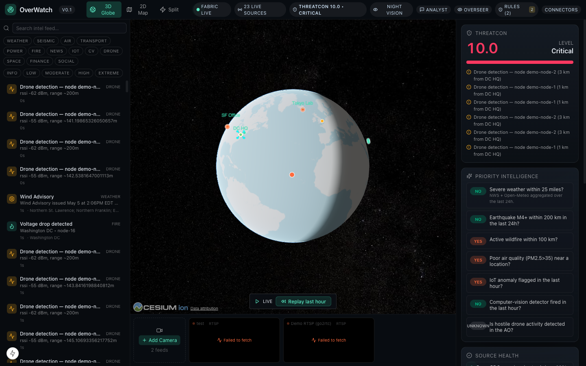
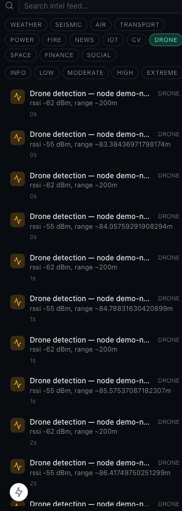
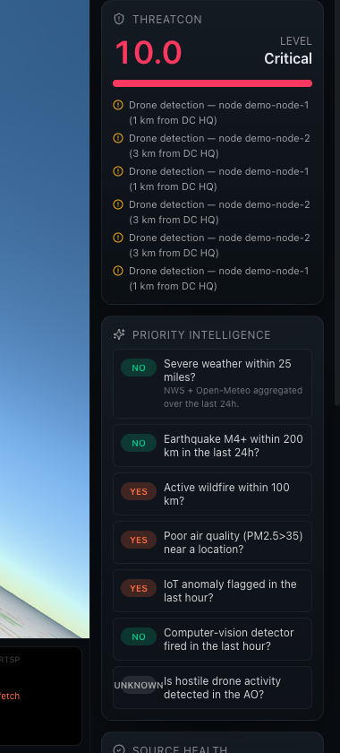

UNCLASSIFIED / INTERNAL DRAFT v0.1 — May 2026
I wanted to get this in front of you because the sensing technology needs to stay front and center, and OverWatch is the platform to operationalize it. I completed the first working implementation of passive RF drone detection inside OverWatch based on the WiDFS 3.0 framework. This brief outlines a drone tracking and reconnaissance capability using Single-Input Single-Output (SISO) bistatic sensing to track aerial drone activity, measure behavior, and issue alerts for restricted airspace intrusions. Below is a concise summary of what I built, what the science says, and what an operator actually sees.
Commercial drones (sub-$500, multi-kilogram payload capacity) represent a rapidly growing threat in both civilian and operational contexts — reconnaissance, payload delivery, communications relay, and coordinated swarm attacks. Traditional radar is impractical at close range: minimum engagement distances, active emissions that expose the sensor, and poor performance against low-altitude slow-moving targets. Commercial drone-detection systems (Dedrone, Aaronia, Fortem) cost $50,000–$500,000 per installation, require proprietary cloud connectivity, and cannot be natively integrated into a unified command picture.
A fully passive drone detection, tracking, and threat-classification module — integrated directly into the OverWatch situational-awareness platform. No active radar emissions. No cloud dependency. Detection data appears in the same Intel feed, triggers the same alert rules, and affects the same THREATCON score as every other intelligence source in the system.
this is the meat:Two ground-based antennas — a reference transmitter (e.g., a WiFi access point or dedicated beacon) and a receiver node — maintain a known RF corridor between them. When a drone flies through that corridor, its airframe and spinning propellers perturb the radio channel in a measurable way: its blades produce a characteristic micro-Doppler sideband pattern in the frequency spectrum — a fingerprint unique to drone flight. The receiver node reports this disturbance. No camera, no active radar pulse, no acoustic sensor. The drone does not need to emit anything to be detected; the detection is purely a consequence of it disturbing the signal between two fixed antennas.



Yes — with specificity about hardware tiers:
By utilizing lightweight signal processing and neural network-driven classification, this application provides a scalable, efficient, and affordable alternative to traditional radar or visual tracking systems. WiDFS 3.0 combines lightweight hardware, low computational requirements, and the ability to operate in non-line-of-sight (NLOS) environments without visual input.
The proposed solution leverages lightweight bistatic sensing to enable next-generation military drone tracking. This system is specifically designed for modern warfare scenarios where adversaries leverage autonomous drone swarms for strikes, or signal spoofing for electronic/cyber warfare.
WiDFS 3.0 improves upon traditional radar by combining highly-efficient signal processing and Integrated Sensing and Communication (ISAC) algorithms into a portable, edge-ready framework. It achieves comparable resolution and motion tracking using just one transmitter and one receiver, massively reducing hardware complexity.
The Core Innovations:
| System Type | Characteristics | WiDFS 3.0 Advantage |
|---|---|---|
| MIMO / Conventional Radar | Expensive, power-intensive, requires extensive infrastructure and large multi-antenna arrays. | SISO Architecture: Lowers deployment cost and size, ideal for resource-constrained edge IoT sensing. |
| FMCW Radar | Larger, power-hungry, often limited to strict line-of-sight visibility. | Bistatic / NLOS: Works entirely on wireless signals; operates through fog, rain, or smoke. |
| Optical (e.g., YOLO) | Requires visual line-of-sight, fails in low-light, raises privacy concerns in civilian deployments. | Privacy-Preserving: Does not capture visual data, unaffected by visual obstructions or lighting. |
While not disruptive in a foundational sense, WiDFS 3.0 is a game-changer for cost-sensitive, scalable sensing solutions. If scaled across broader domains, it will become the cornerstone in bistatic wireless deployments.
| Category | Objectives & Requirements |
|---|---|
| Hardware Edge Nodes | Raspberry Pi / Jetson Nano units with SISO bistatic antenna setups. Extended RF tuning for specialized jamming/signal detection. |
| Software & UI | Refine the Map-centric Mission Command interface (violation heat maps). Integrate military standards like AES-256 for telemetry encryption. |
| Future Proofing | Adapt WiDFS 3.0 principles to 3D sensing, adding Tier-2 relays with enhanced compute capacity for scalable multi-zone monitoring. |
| Mode | Hardware | Range | Status |
|---|---|---|---|
| Passive RF intercept | Raspberry Pi 4 + RTL-SDR (~$80/node) | 50–100 m LOS | Works today — detects drone's own 2.4/5.8 GHz emissions |
| Bistatic passive radar | KrakenSDR 5-channel coherent SDR (~$350/node) | 100–500 m | Lab-prototype validated; hardware integration path documented |
The underlying science is independently peer-reviewed. The Ilmenau University of Technology group (Costa et al.) has published four validated experimental studies — IEEE RadarConf24 (2024), IRS Wroclaw (2024), IEEE JSTEAP (2025), GeMiC (2025) — demonstrating that OFDM communication signals produce discriminative micro-Doppler signatures from commercial drone propellers with ~0.98 model-to-measurement correlation. A fifth field study (Demissie et al., IET Radar 2025) validated LTE-based passive radar drone detection at ~200 m range in outdoor conditions.
Open-source signal-processing foundations exist: pyapril (pip-installable Python passive radar DSP library) and passive-sdr-radar (Docker, KrakenSDR + Pi pipeline, hardware integration in active development).
The map plots a position estimate for each RF-detected object — the system's best guess of where the drone is, derived from signal strength and Doppler data at the ground nodes, not from a camera or optical sensor.
| Priority | Item | Effort |
|---|---|---|
| High | Replace heuristic scoring with MobileViT XXS ONNX model trained on labelled drone flight data | 2 weeks |
| High | Frequency fingerprinting — identify drone make/model from CSI signature (DJI, Autel, DIY) | 1 week |
| Medium | Geo-triangulation — fuse range estimates from ≥2 nodes for a 3D position fix | 1 week |
| Medium | Hardware integration guide — KrakenSDR + Raspberry Pi OS image with MQTT auto-config | 3 days |
The module runs locally today with simulated demo tracks over Washington DC. Full instructions are in docs/drone-detection-readme.md. Happy to set up a live demo.